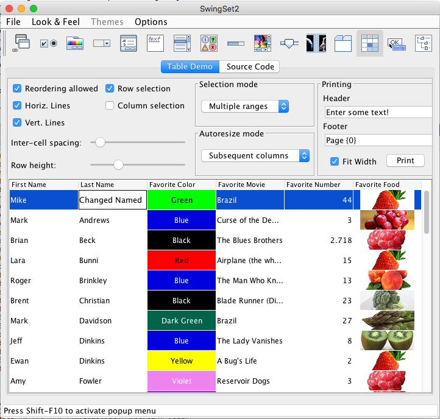

| 1 |
Table Demo (tests table navigation, as well as textfield input) |
- Press Left/Right arrow key until the Table icon has focus. Press 'space' to choose.
- Tab until the "Table Demo" tab has focus. Press 'space'. Press 'tab'. "Reordering allowed" should
have focus.
- Tab to the Printing/Header textfield. Verify that you can type in some text.
- Continue tabbing until focus moves to the table. The table should show focus.
- Press the down arrow. "Mike Albers" should have focus.
- Use the right and left arrow keys to navigate between cells.
- Set focus to a text cell (e.g. someone's first name). Press space to edit. Type some text. Hit
'enter' and verify the text has been changed. After editing a text cell and hitting 'enter', the
focus could remain on the current cell or go to the next line.
- Press the 'Page Up' and 'Page Down' keys (if available on your keyboard); verify that the Table
scrolls up and down, page by page.

|